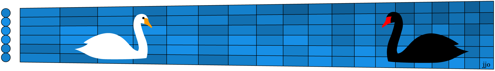

No, this is NOT about Tchaikovsky's Swan Lake ballet where the evil Odine, as a black swan, is the antagonist to Odette, the white swan. This month's sightreading handout* is from two separate pieces about two different swans by two different composers in two different countries (France and Finland).
One piece is short (shown here in its entirety) and in a major key; the other is long (shortened to fit on the same page) and in a minor key. One was part of a comedic suite the composer forbid publication of during his lifetime; the other a single-movement tone poem based proudly on national folklore. One is the favorite of cellists; the other of oboists (playing the low cor anglais). One swan is commonplace; the other sacred. One piece could portray a child's walk in the park; the other a bridge for the dead into the underworld, and that music has even been specifically cited in one author's account of an after dead communication. They're as different as black and white.
But both pieces use slow ascending runs to convey the effortless gliding of a swan over the water, and both are playable in first position. Oh, and in the graphic, the swans are both on the fifth string centered over its two C's, of course. Try these sightreads to enjoy both their differences and similarities, and to see if you can recognize their famous composers.